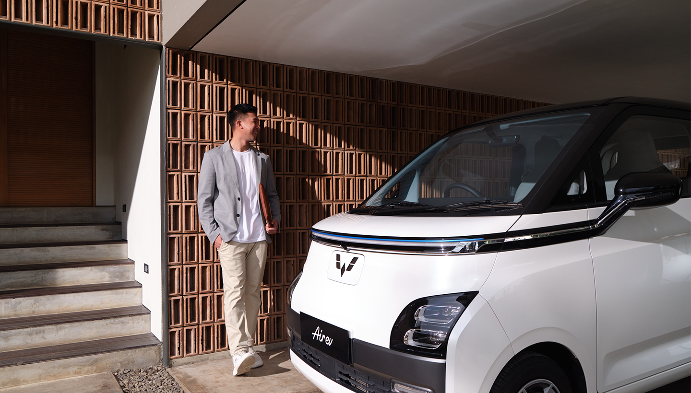

3 Juni 2026
Indonesia Launches Large-Scale Electric Vehicle Subsidy Program

Indonesia has launched a big program to help people buy electric vehicles. The government will provide subsidy to reduce car prices. The program starts in June 2026.
The plan is to help 200,000 people buy electric vehicles. This will make cars more affordable for families. They are good for the environment because they do not produce pollution.
Many countries around the world are doing the same thing. Indonesia wants to reduce air pollution in cities. This program helps the economy and the environment at the same time.